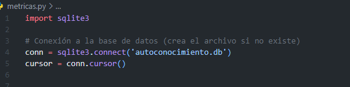
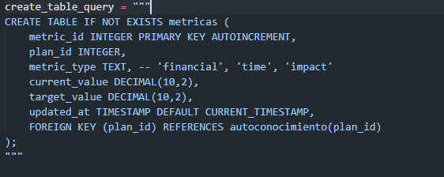
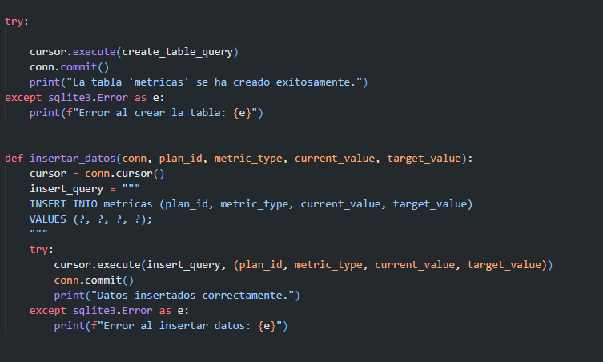
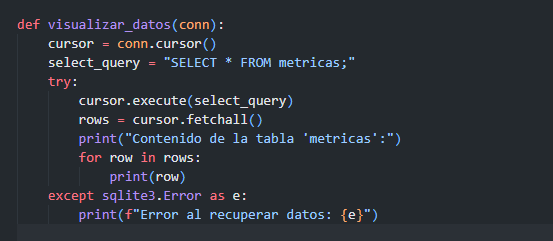
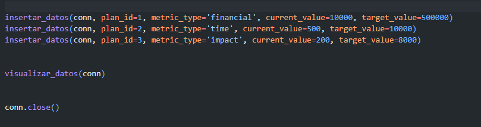
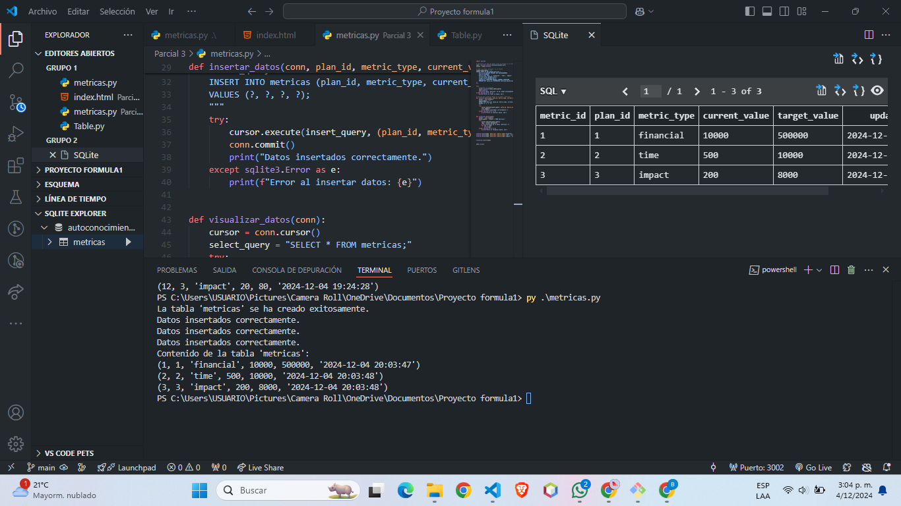

Creación de una base datos con Python
Conexión a la base de datos (crea el archivo si no existe)
import sqlite3
conn = sqlite3.connect('autoconocimiento.db')
cursor = conn.cursor()

Crear la tabla 'metricas' si no existe
create_table_query = """
CREATE TABLE IF NOT EXISTS metricas (
metric_id INTEGER PRIMARY KEY AUTOINCREMENT,
plan_id INTEGER,
metric_type TEXT, -- 'financial', 'time', 'impact'
current_value DECIMAL(10,2),
target_value DECIMAL(10,2),
updated_at TIMESTAMP DEFAULT CURRENT_TIMESTAMP,
FOREIGN KEY (plan_id) REFERENCES autoconocimiento(plan_id)
);
"""

try:
Ejecutar la consulta
cursor.execute(create_table_query)
conn.commit()
print("La tabla 'metricas' se ha creado exitosamente.")
except sqlite3.Error as e:
print(f"Error al crear la tabla: {e}")
Función para insertar datos en la tabla 'metricas'
def insertar_datos(conn, plan_id, metric_type, current_value, target_value):
cursor = conn.cursor()
insert_query = """
INSERT INTO metricas (plan_id, metric_type, current_value, target_value)
VALUES (?, ?, ?, ?);
"""
try:
cursor.execute(insert_query, (plan_id, metric_type, current_value, target_value))
conn.commit()
print("Datos insertados correctamente.")
except sqlite3.Error as e:
print(f"Error al insertar datos: {e}")

Función para visualizar los datos de la tabla 'metricas'
def visualizar_datos(conn):
cursor = conn.cursor()
select_query = "SELECT * FROM metricas;"
try:
cursor.execute(select_query)
rows = cursor.fetchall()
print("Contenido de la tabla 'metricas':")
for row in rows:
print(row)
except sqlite3.Error as e:
print(f"Error al recuperar datos: {e}")

Insertar datos de ejemplo
insertar_datos(conn, plan_id=1, metric_type='financial', current_value=10000, target_value=500000)
insertar_datos(conn, plan_id=2, metric_type='time', current_value=500, target_value=10000)
insertar_datos(conn, plan_id=3, metric_type='impact', current_value=200, target_value=8000)
Visualizar datos almacenados
visualizar_datos(conn)
Cerrar la conexión al final del programa
conn.close()

Visualización en visual studio

Hola mundo